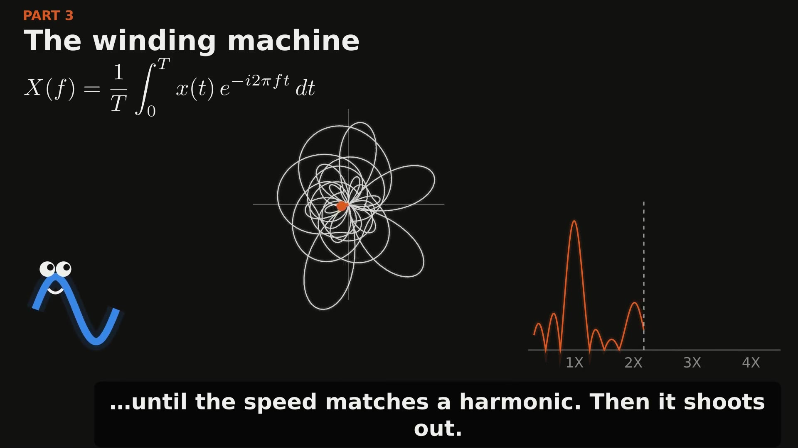
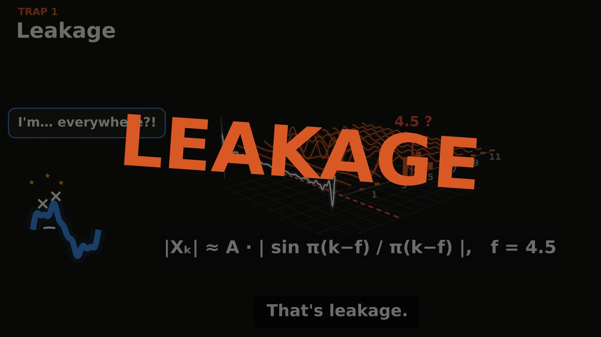
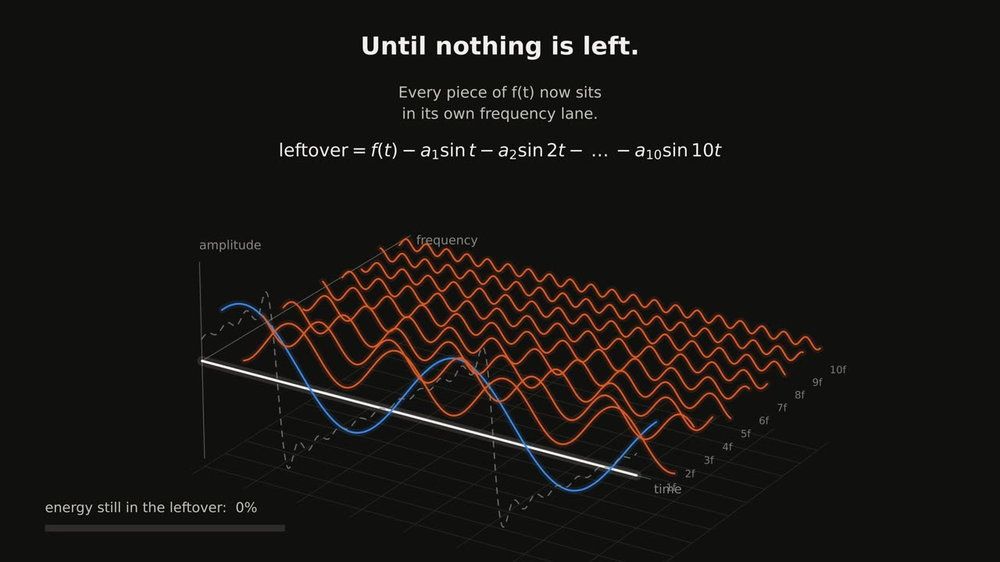
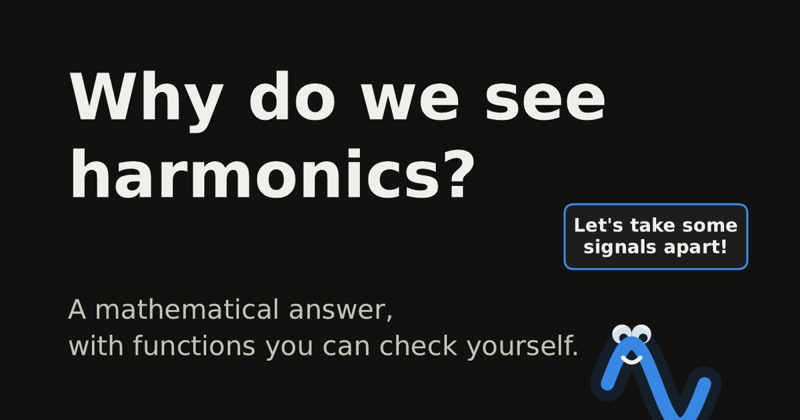
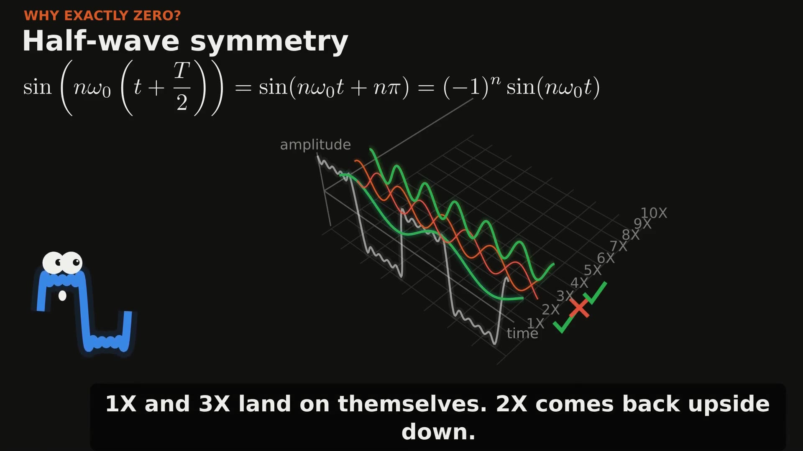

Explainers
Vibration, explained visually
The full versions of my LinkedIn posts: the videos, the maths, interactive boards, and the code and data to download.
Series 2The FFT

Part 1 · Video + carouselThe half of the FFT your analyser throws away
Real and imaginary parts, why half the FFT is a mirror, the winding machine, and why phase is the shape.

Part 2 · Video + interactiveLeakage and aliasing: the FFT's two traps
Why one clean tone smears across every bin, why a fast signal shows up at the wrong frequency, and the fix for each.
Wavelets
For signals that change over time, when one spectrum isn't enough.
PlannedSeries 1Harmonics

Part 1 · VideoWhat the FFT actually shows
A signal pulled apart into its sine waves in 3D. From the side, it's the spectrum.

Part 2 · Carousel + interactiveWhy we see harmonics
Square, sawtooth, triangle, a clipped sine and a real machine signal, built harmonic by harmonic.

Part 3 · VideoWatch a signal come apart
Every example split into its harmonics in 3D, and why a symmetric wave has exactly zero even harmonics.